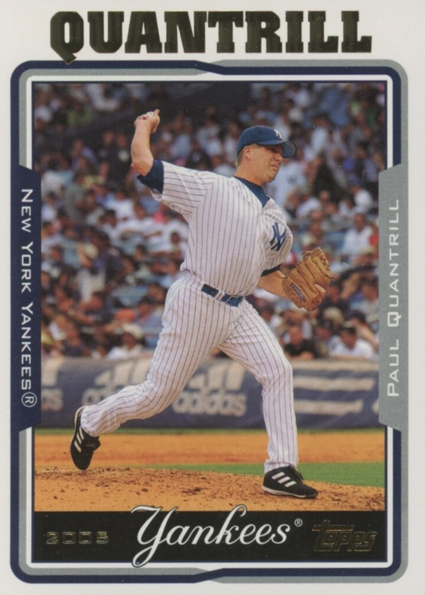

Paul Quantrill
Career Highlights & Facts
- He is Canadian and represented Canada in the 2006 World Baseball Classic.
- He holds the MLB record for most career relief appearances (891) without ever making a start.
- He was named an American League All-Star in 2001 while pitching for the Toronto Blue Jays.
- His son, Cal Quantrill, is also currently a Major League Baseball pitcher.
The Original Clue